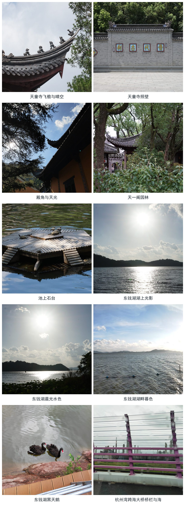

2026 年 8 月初，我们一家从上海自驾出发，用四天时间走了一趟宁波。出发那天天气好得不像话，台风还远在海上；四天里，我亲眼看着一场叫“白海豚”的台风，从很远的海上一步步走近宁波，又慢慢离开。
第一天在太白山里的天童寺：蓝天白云，树绕着屋、屋依着山，安静得像另一个世界。第二天走进天一阁——我国现存最古老的私家藏书楼，范家守了四百多年；也就在这一天，天阴了下来，隔壁的城隍庙关了门，手机上一条条退票通知，整座城开始为台风做准备。第三天台风登陆，只能隔着宾馆的玻璃看东钱湖：风把雨吹得横着飞，白浪一层压着一层，连湖上的廊桥都被吹塌了。第四天风雨渐小，回程穿过杭州湾跨海大桥，站上建在海上的观景平台，四面只有灰蒙蒙的天和翻滚的海，一眼望不到边。
风雨过后，路能走，红绿灯照常亮着，城市几乎看不出被横扫过的痕迹。天一阁守书守了四百年，今天的宁波守城，守的是整座城的安宁——守护，古人做过，今人还在做。
行程
- Day 1 · 8/7上海 → 宁波 · 天童寺（晴，台风还很远）
- Day 2 · 8/8天一阁（天转阴，城隍庙关闭、全城戒备）
- Day 3 · 8/9东钱湖（台风“白海豚”登陆，风浪与廊桥垮塌）
- Day 4 · 8/10杭州湾跨海大桥 → 上海（雨歇，海上观景平台）
照片
沿途风景，均为无人出镜的风景照。
